서울 용산구 김**님이 '스페인 발렌시아 사프란 해산물 빠에야' 마스터 완료!
세계 8대 퀴진 오디세이
지중해의 풍요로운 올리브 밭에서부터 방콕 밤거리의 웍 프라이까지. 아틀리에 퀴진이 엄선한 전세계 정통 레시피와 큐레이션을 경험하세요.
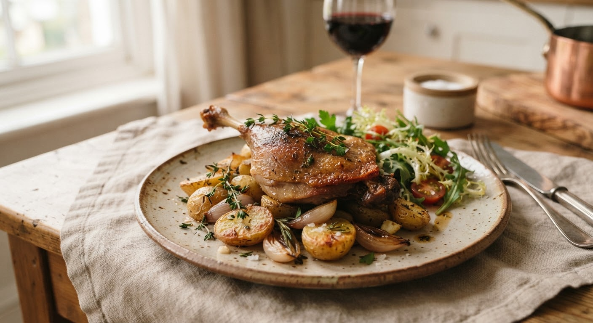
FR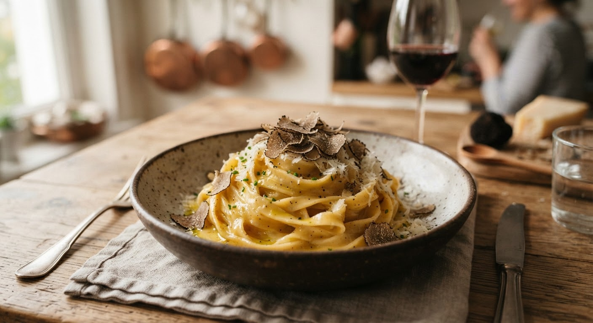
IT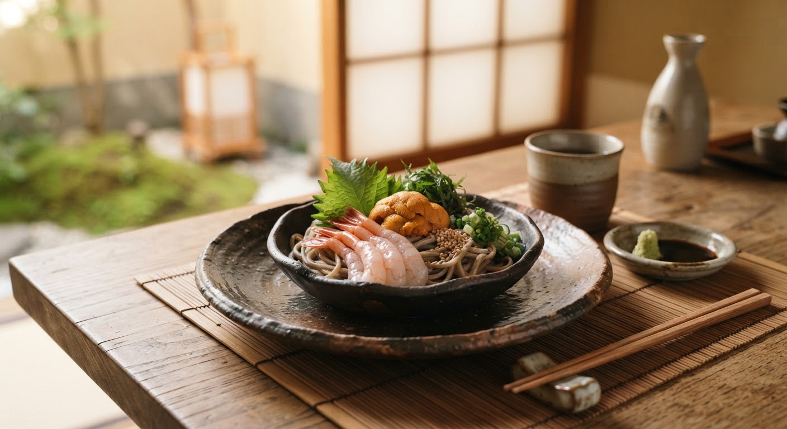
JP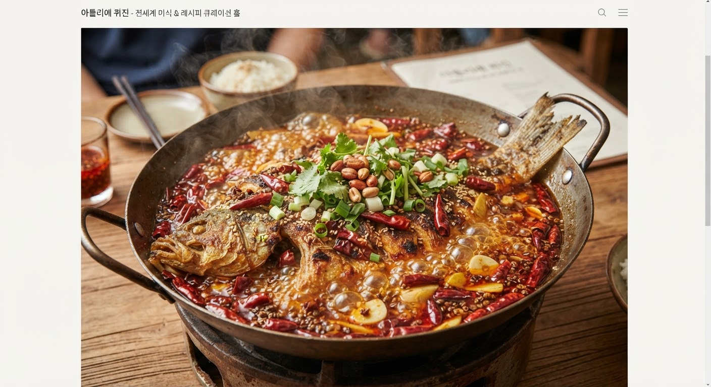
CN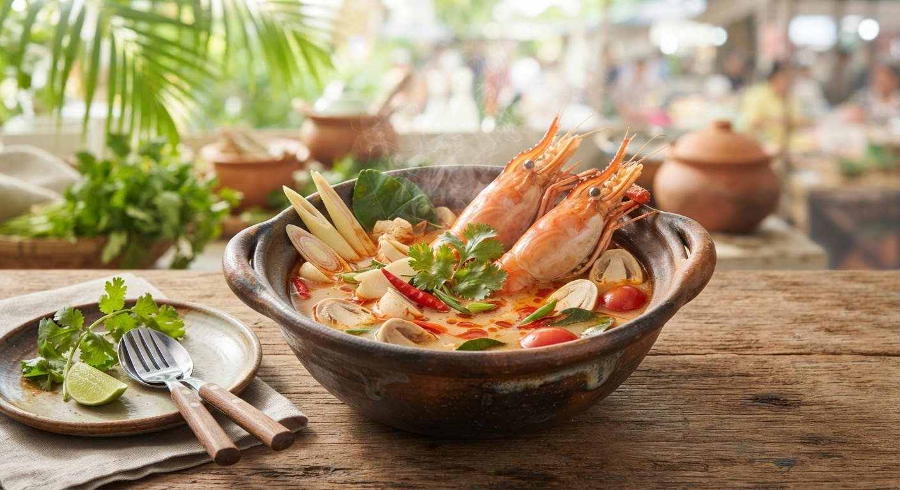
TH/VN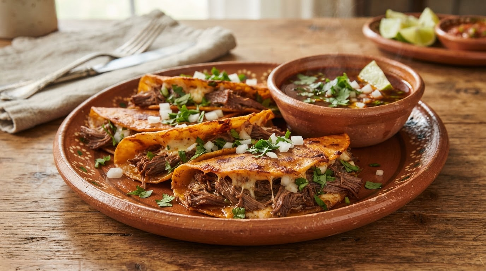
MX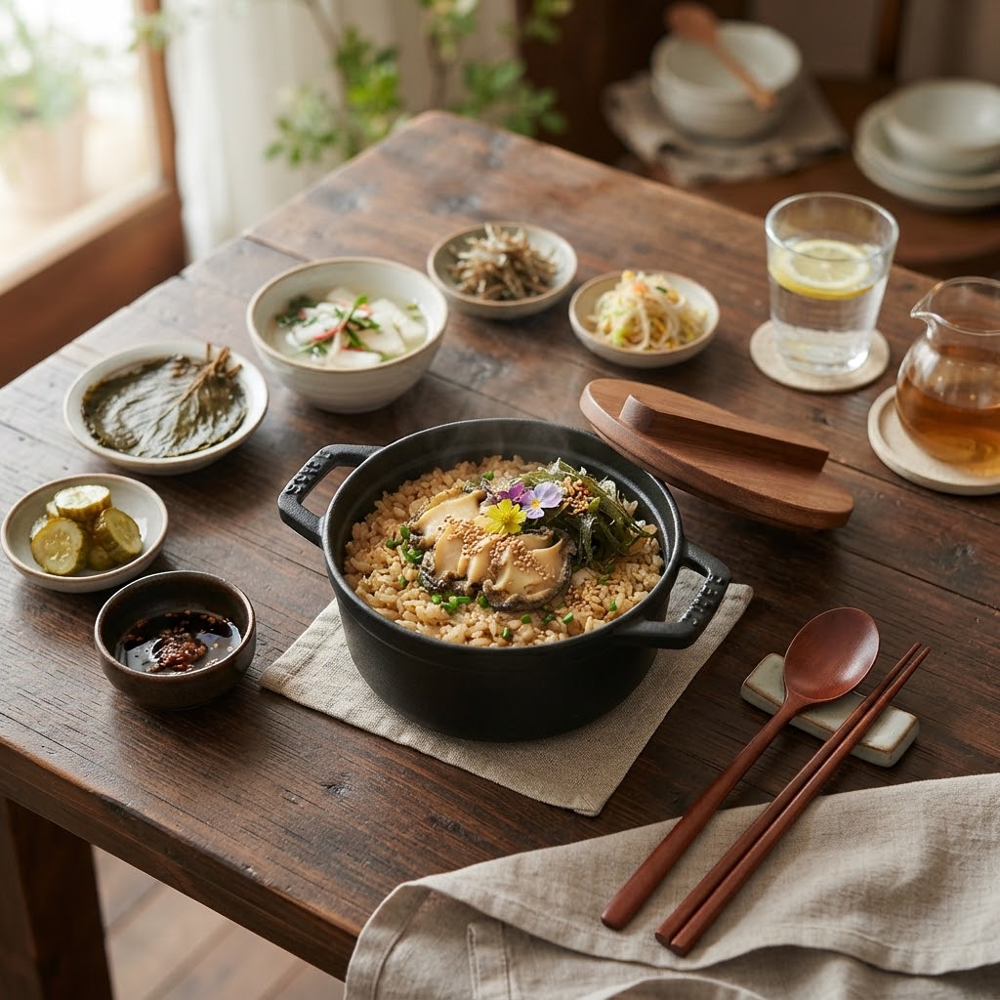
KR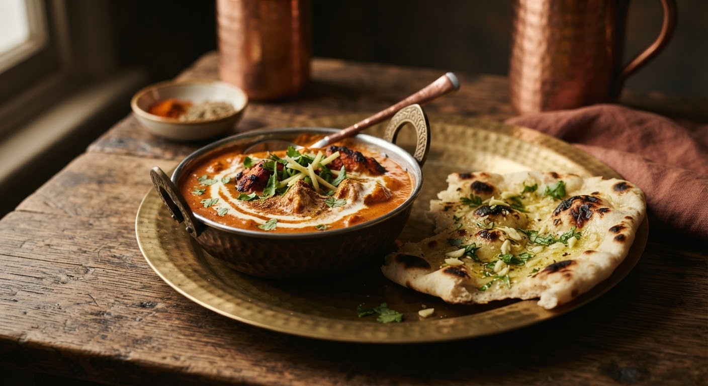
IN/ME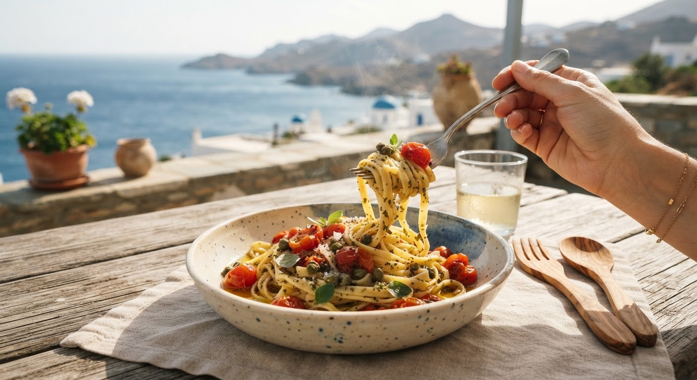
마테오 셰프 (前 로마 마스터 1스타)
지중해에서 온 햇올리브와
수제 생면 파스타의 계절
“진정한 파스타의 미학은 복잡한 양념이 아닌, 갓 짜낸 첫 번째 콜드프레스 올리브유와 알 덴테로 삶아낸 생면의 담백한 마찰에서 시작됩니다.” 그리스 산토리니 햇올리브와 케이퍼, 이탈리아 직수입 세몰리나 밀가루로 완성하는 지중해 정통의 식탁을 공개합니다.
마스터 셰프가 전하는
전세계 퀴진의 시크릿 킥
“불과 기름이 만나는 0.5초의 순간, 동남아의 깊은 감칠맛을 내는 팜슈거 카라멜라이징과 프렌치 소스의 유화 법칙.” 아틀리에 퀴진 마스터 셰프들이 숨겨둔 테크닉을 비디오 클래스로 만나보세요.
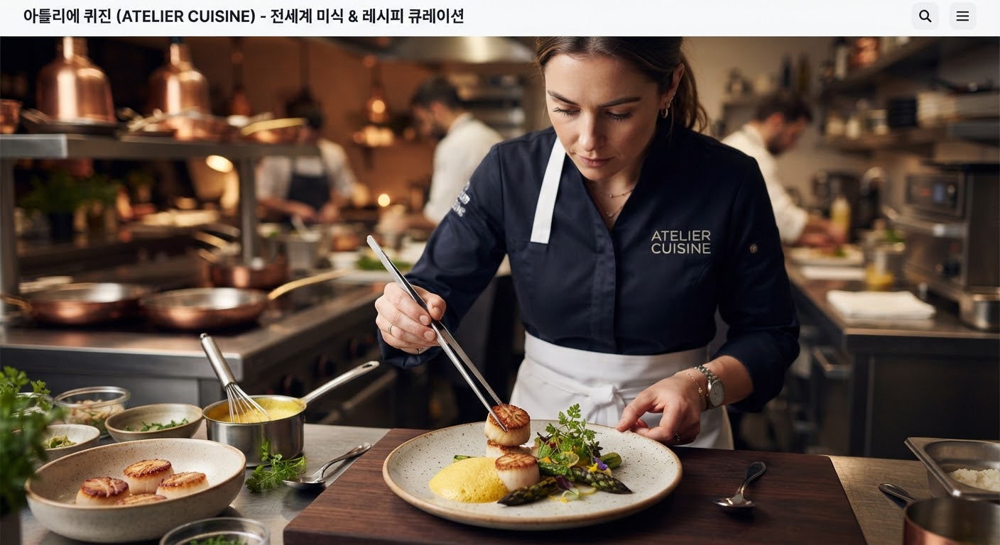
에디터 초이스: 세계의 테이블
 🇫🇷 프랑스 부르고뉴
🇫🇷 프랑스 부르고뉴
정통 부르고뉴 와인 비프 부르기뇽
피노 누아 와인에 12시간 숙성한 소고기 사태와 펄 어니언의 깊고 그윽한 풍미.
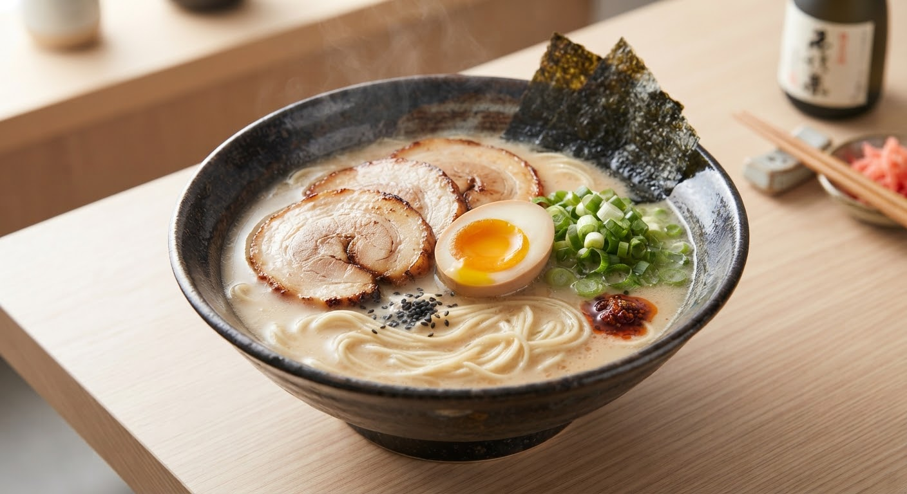
🇯🇵 일본 후쿠오카자가제면 차슈 진국 돈코츠 라멘
가정에서 완성하는 8시간 우린 풍미의 돈사골 베이스와 수제 간장 타레 레시피.
 🇹🇭 태국 방콕
🇹🇭 태국 방콕
소프트쉘 크랩 옐로우 푸팟퐁커리
바삭하게 튀긴 게살과 몽글몽글 부드러운 코코넛 칠리 오일 에그 소스의 완벽한 조화.
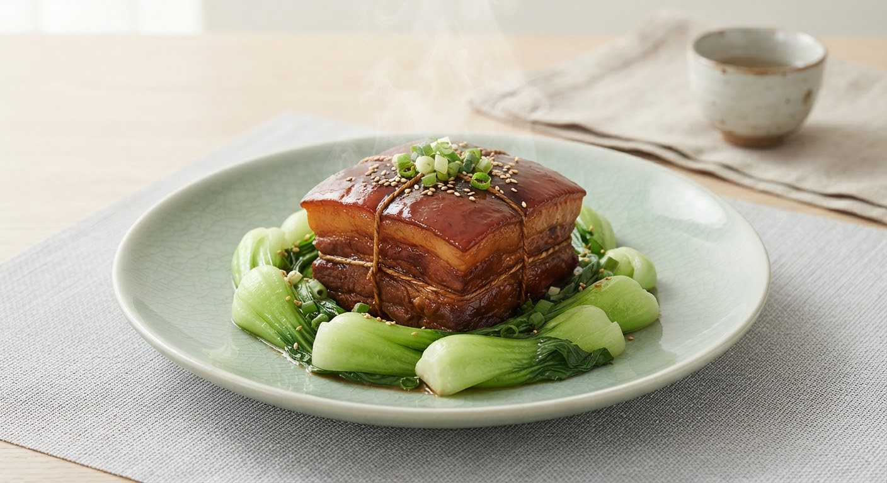
🇨🇳 중국 항저우입안에서 녹아내리는 항저우 동파육
소흥주와 흑설탕의 은은한 캐러멜화로 기름기는 쏙 빼고 젤라틴의 탄력을 극대화한 레시피.
독자들의 세계 요리 테이블 (Global Table Feed)
목요일 아침, 전세계의 식탁을 메일함으로 배달합니다
마스터 셰프의 시크릿 킥, 제철 식재료 산지 직송 소식, 그리고 놓칠 수 없는 단독 공동구매 특가 혜택을 가장 먼저 받아보세요.